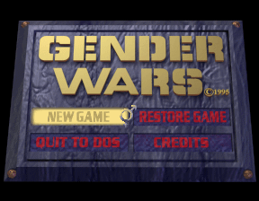

Inequality in technology
 This game is outdated.A week of conflict
This week has been controversial for anyone who is passionate about video games. There is a problem in video games which to some extent also exists in the rest of the tech industry. I won't get into the video game details here as it is accurately addressed by Ian Steadman in his article at the New Stateman. I also happened across this article on a book written by Vivek Wadhwa. I felt moved to address this problem in the tech industry.
Tech culture
Just a few years ago I would have explained the lack of women in the field away by stating that women just aren't interested in technology as men are. While this can appear to be the case on a superficial glance, I have come to see that this is not the whole truth. I have met women who are genuinely passionate about technology even while the culture around it mostly caters to men. To me this indicates that if we can open up this culture more women will gravitate towards technology. I feel this is important because each person can bring their own perspectives and experiences into the field.
At the root
We live in a society where gender roles are still strongly reinforced throughout media and education starting pretty much from birth. Some time ago I observed an interesting scene at a friends house. They have a young girl and an even younger boy. They have some shared toys, some of their own. The boy has his own toy car. While he was playing with another toy, the girl started playing with the car. The boy cried, threw a tantrum and the girl was told not play with her brother's car. It was explained to her that he had his toy and she had hers, which happened to be a mini kitchen.
Children's programs are padded by advertisement selling dolls to girls and cars to boys. This is where it starts. As the boys grow older they keep on playing with their toys. If you looked at the article I referenced it is obvious that some men haven't really developed beyond the example I just described. When a woman enters the field of their toys, they throw a tantrum and yell for someone to make it stop.
It is time for these boys to not just grow up, but to mature. As men and women both we can welcome all insights and contributions to add to a more creative and vibrant field of knowledge. There is no danger of losing our toys as there is no loss by adding to what already exists. There is change and attempting to stop or slow down change is a waste of energy.
Onwards
In the short time I have been participating and following Dev Bootcamp I have already seen more women making their mark than I had seen in the area I have been working in so far and it is inspiring. While it definitely can be fun, I welcome my move away from the boys club into a field where more diverse creative minds gather. Where innovation takes place we have the opportunity to level the playing field. I feel it is important to make that choice consciously.
We all share a responsibility to speak up, to act for the benefit of all. I can do this by in the very least not participating in the boys club mentality. When it helps the situation I can be vocal for injustice. These are choices each of us can make every day.
This is how we can take responsibility as men. For women to speak up, I am not in the position to tell you how. This point is raised in the linked article where the male author decided to let the women do the talking in his book.
Finally I wish to applaud the initiatives of coding schools, encouragement and scholarships for women. This is not a problem solved by standing around and talking about it. Any woman showing interest in this field should be welcomed by creating a safe and respectful environment and I am enheartened to see a growing number of people coming into the field doing exactly that.